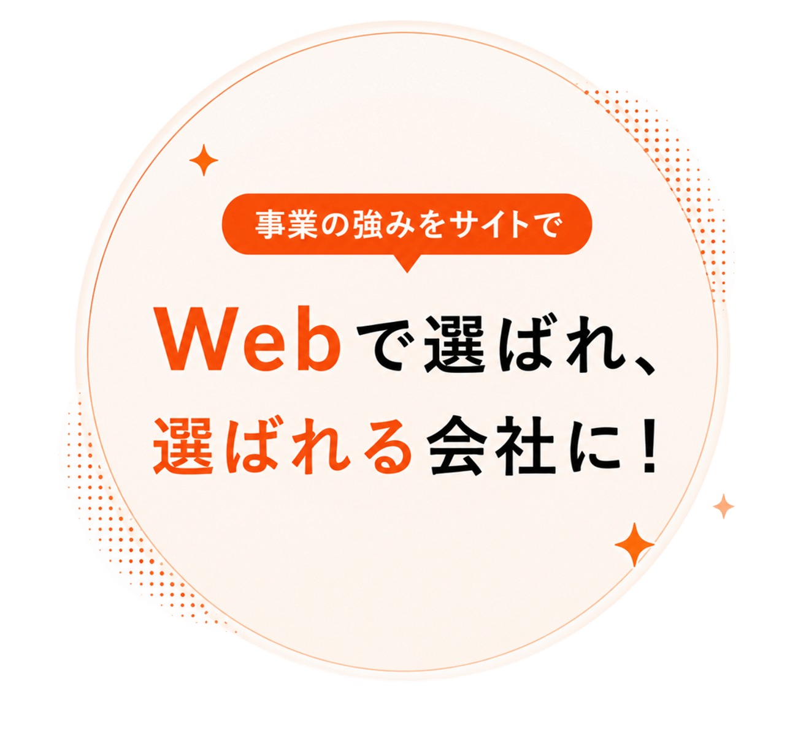
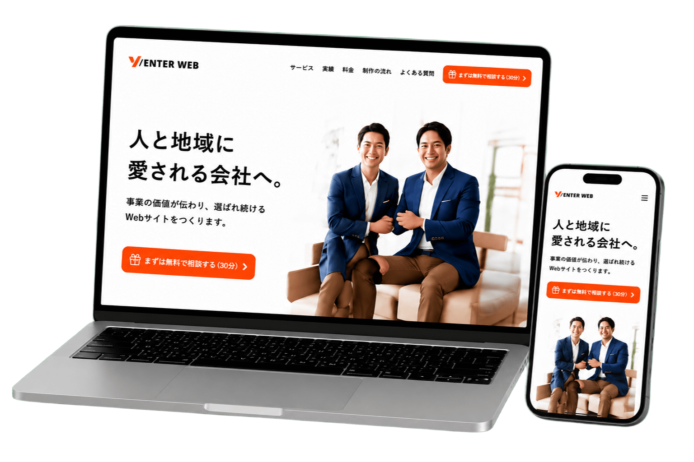
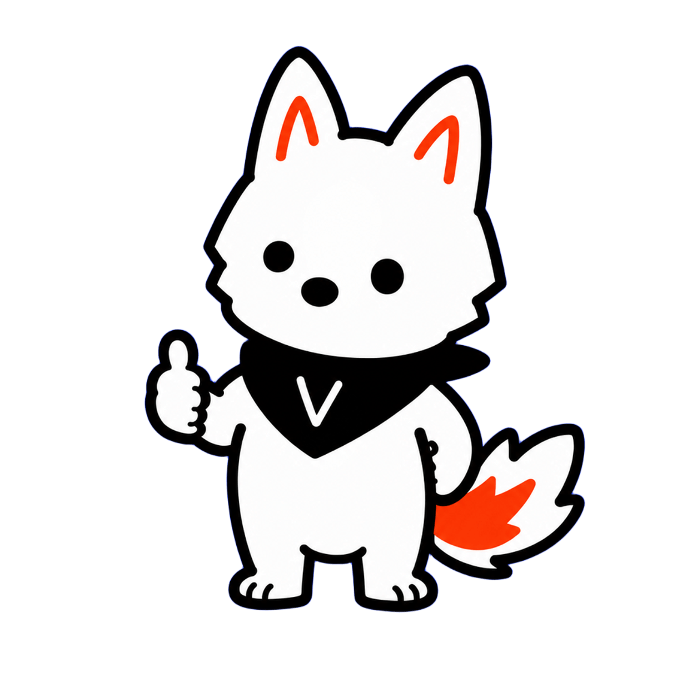

自社の強みが
伝わっていない
何をアピールすれば
選ばれるのか
わからない。


採用・集客・営業導線をまとめて整えるWebサイト
地域の成長を、つくる仕事を、誇れる会社へ。

何をアピールすれば
選ばれるのか
わからない。
デザインや情報が
古く、信頼性を
損ねてしまっている。
会社の魅力や価値観が
うまく伝わらず、
応募が集まらない。
導線や情報が整理されておらず、
行動につながる設計に
なっていない。
更新や発信が続かず、
集客や関係づくりに
つながっていない。
日々の業務に追われて、
サイトの改善や運用まで
手が回らない。
伝わるWebが、集客・採用・売上の好循環をつくります。
必要な人にしっかり届き、
新しい出会いが生まれます。
導線と仕組みを整え、
行動につながるWebに。
強みや想いが伝わり、
「この会社にお願いしたい」
と思われるように。
集客から成約までが
スムーズになり、
成果が安定して続きます。
やりたいことに集中できる
環境が整い、
事業もあなた自身も成長します。
今のままでは...
ホームページが
古くて信頼されない...
情報が見つけず、
比較検討されてしまう
問い合わせや電話対応
に追われて...
予約が少なく、来店や
売上も減る
V/ENTER WEBで変わる未来
必要な情報が
信頼感と一緒に伝わる
お店や会社の魅力を、
納得感をもって伝える
問い合わせ対応や
説明が減って、効率UP
より多くの人が
お店や会社を選ぶ
制作して終わりではなく、事業成長・集客まで一貫して支援します。
ヒアリングから、
選ばれる理由を言語化し、
最適なコンセプトを
設計します。
目的に合わせた構成と
デザインで、「伝わる・
信頼される」サイトを
戦略的につくります。
採用・予約・問い合わせ
など、成果につながる
導線設計で行動を
促します。
データ分析と改善、
AI活用で成果を最大化し、
成長し続けるサイト運用
を支援します。
相談しやすいパートナー
として、いつでも頼れる
安心のサポート体制です。
サポートAIによる保守・
運用でトラブルを未然に防ぎ、
安定した運用を実現します。
サイトの導線設計を見直し、予約までの流れをシンプルに。
その結果、新規のお客様が増え、予約数が大きく改善しました。
人で選べる安心感
企画から公開後の改善・運用まで、
各分野のプロが連携してサポート。
あなたのビジネスの成長を、チーム全員で伴走します。
株式会社VAIZO
代表取締役社長
株式会社VAIZO
代表取締役
見やすく・伝わるデザインで
魅力を最大限に表現します。
データを見ながら改善提案・
運用サポートを行います。
AIを活用した運用・保守で
Webの成果を支え続けます。